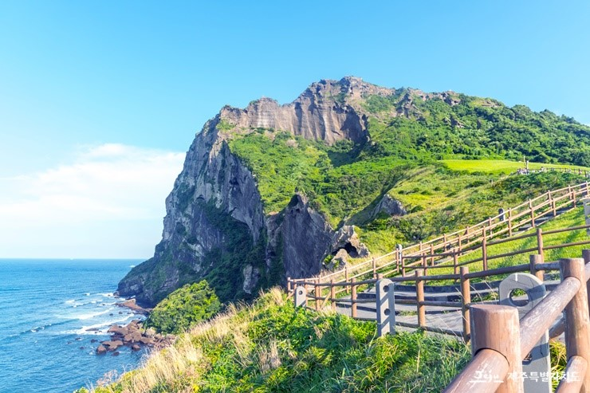

성산일출봉
제주도 하면 떠오르는것중 하나인 성산일출봉.
성산일출봉은 자연의 신비를 볼수있어 관광객의 발걸음이 끊이지 않는곳으로 제주의 대표적인 관광지중 한군데 입니다.
성산일출봉은 다른 오름과는 달리 마그마가 물속에서 분출하면서 만들어진 수성화산체(다른 오름과 달리 일출봉이 얕은 바다속에서 분출한 수중 폭발 화산) 입니다.
관람료는 개인 기준 어른은 2,000원 청소년 과 군인,어린이는 1,000원 이며
매표 시간은
07:00시 ~19:00시 까지 이며 관람시간은 매표시간보다 한시간 긴 07:00~20:00시 까지입니다.
보통 정상까지 올라가는데 걸리는 시간은 약 50분 정도 소요되는 편이고 계절마다 풍경이 바뀌기 때문에 전에 가봤더라도 다른 계절에 한번더 가보는것을 추천 합니다.